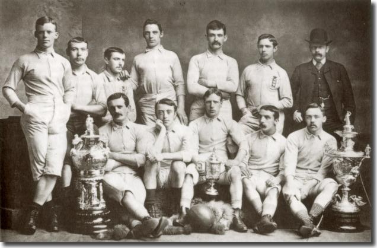
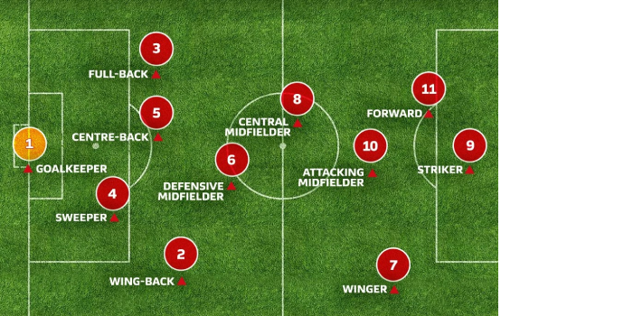
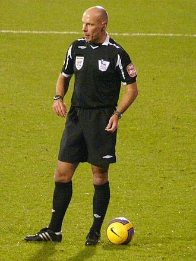
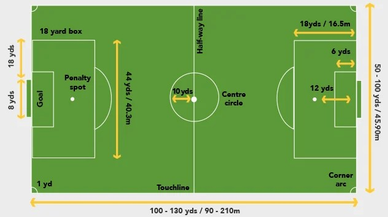

Football Insight
History of Football

The History Of Soccer More than 240 million people around the world play soccer regularly according to the Federation Internationale de Football Association (FIFA).
Greece, Rome, and parts of Central America also claim to have started the sport; but it was England that transitioned soccer, or what the British and many other people around the world call “football,” into the game we know today.
For example, the penalty kick was introduced in 1891.
FIFA became a member of the International Football Association Board of Great Britain in 1913.
More recent major changes include goalkeepers being banned from handling deliberate back passes in 1992 and tackles from behind becoming red-card penalties in 1998.
Fundamental skills in Football
-
- Passing
- Passing is kicking, pushing or heading the ball to a teammate or to a space where a teammate can run to the ball. A player may lightly tap the ball to a teammate several feet away or kick it strongly to move it down the field.
-
- Dribbling
- Dribbling is transporting the ball under control from one area to another. Soccer players cannot use their hands. Players dribble the ball with their feet, using light taps on the ball to move it along the ground.
-
- Controlling
- Controlling (or trapping) is stopping the ball in flight or on the ground, and then controlling it by either dribbling or passing the ball to teammates.
-
- Heading
- Heading is unique to the game of soccer. When a ball is too high to kick, players "head" the ball to pass to a teammate or score a goal.
Players and their positions

A team consists of 11 players as follows.
-
- Goalkeeper
- The main aim of a goalkeeper is to stop the opposing team from scoring a goal. The goalkeeper is restricted to the rectangular penalty area which is 18 yards away from the goal and he is the only player in the game who is allowed to use his hands to stop the ball.
-
- Defenders
- The defenders are positioned in front of the goalkeeper and their aim is to stop the opposing team from entering into their goal area.
-
- Outside fullback
- They play on the left and right flanks and see that the ball doesn’t pass over them. They rarely move from their positions.
-
- Central Defenders
- They are positioned in the center of the field and are supposed to cover the leading goal scorer of the opposition’s team.
-
- Midfielders
- They are the link between the defenders and attackers. They need to be fit and physically very strong than other players on the field as they are the players who run maximum time of the game all around the field. Their responsibility is to enter the opposing team’s area and see that they defend them when the opposing team retains the ball.
-
- Forwards
- Their main aim is to score goals or to create an easy situation for their teammates to score a goal.
-
- Center Forward
- The most tactful, dangerous and strong player of the game. They are also called strikers. Strikers are basically the leading goal scorers in the game.
The officials

A game is officiated by a referee, who has "full authority to enforce the Laws of the Game in connection with the match to which he has been appointed" (Law 5), and whose decisions are final. The referee is assisted by two assistant referees. In many high-level games there is also a fourth official who assists the referee and may replace another official should the need arise.
The field

The field is divided in two halves. The center circle in the middle of the field is used to start the game, to start the second half and to restart after a goal has been scored.